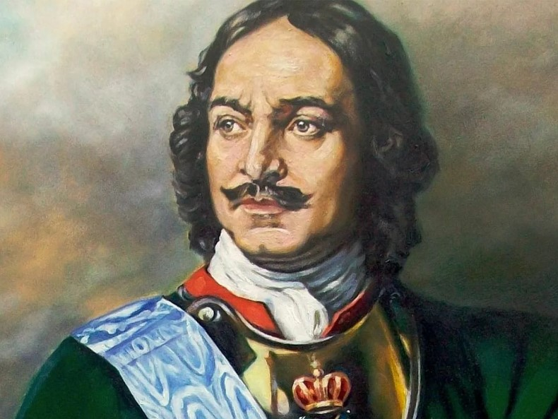

Санкт-Петербург, основанный Петром I в 1703 году на отвоеванных у Швеции землях, стал столицей России в 1712 году. В 1719 году здесь открылась Кунсткамера – первый общедоступный музей в России, а в 1724 году – Петербургская Академия Наук. Город стал свидетелем восстания декабристов в 1825 году и открытия первой российской железной дороги в 1837. В 1914 году Николай II переименовал его в Петроград, а в 1924 город стал Ленинградом, пережившим героическую блокаду с 1941 по 1944 годы. Историческое название Санкт-Петербург вернулось к городу в 1991 году.

Знаете ли вы?
Петр 1 был провозглашён царём в 10-летнем возрасте, стал править самостоятельно с 1689 года. А правил страной целых 43 года!
Петр 1 был провозглашён царём в 10-летнем возрасте, стал править самостоятельно с 1689 года. А правил страной целых 43 года!